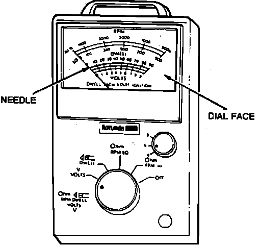

Analog Volt/Ohm Meter (VOM)
Analog Volt/Ohm Meter:

PURPOSE
Like digital meters, Analog Volt/Ohm Meters (VOM's), can be used to measure and compare actual values with expected circuit values.
ADVANTAGES OF ANALOG METERS OVER DIGITAL METERS
Analog Meters are especially useful when checking the output voltage or resistance of potentiometer type sensors, (i.e. throttle positions sensors), because the output voltage or resistance can be read as a smooth sweep of the needle.
It is difficult or impossible to see a jump in resistance or voltage using a Digital Volt/Ohm Meter (DVOM).
NOTE: Always connect meter with correct polarity, to avoid damaging meter and/or circuit.
VOLTMETER CAUTION: When measuring voltage always connect meter in parallel to a circuit or component. Connecting a voltmeter in series with a circuit will damage the voltmeter and/or the circuit.
OHMMETER CAUTION: Always disconnect any voltage sources from the circuit or component, before attempting to measure resistance of a circuit or component. Connecting an ohmmeter to a circuit while voltage is present will damage the meter and/or the circuit.